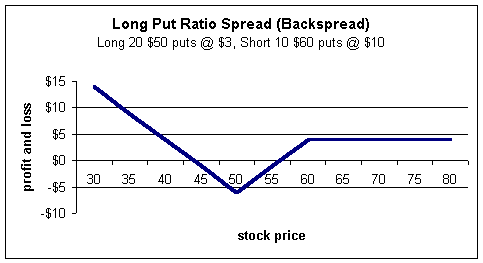
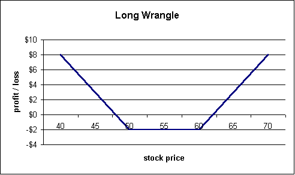

Wrangles
The wrangle is a complex position usually used by market makers for reasons we will see later. It consists of a long ratio spread with calls and a long ratio spread with puts. Long ratio spreads are also known as backspreads. A long call ratio spread is established by selling a lower strike call and purchasing two (or more) higher strike calls. Likewise, a long put ratio spread entails selling a higher strike put and then purchasing two (or more) lower strike puts.
Let's look at the individual pieces and then put them together. The profit and loss diagram for a long call ratio spread looks like this:
The profit and loss for the long put ratio spread looks like this:

If we put these two profit and loss diagrams together we get the wrangle:
If you read our section on the strategy of "strangles," you may recognize the above profit and loss diagram as identical. However, the wrangle, unlike the strangle, will not be exposed to the same time decay if the stock stands still. It's my guess that the wrangle gets its name from the fact that it is a ratioed strangle (which sounds like wrangle).
It may be difficult to see why the above profit and loss diagram results from two long ratio spreads but let's break down the two component positions using $50 and $55 strikes and see if we can make sense of it.
The basic long call ratio spread is:
Sell 1 $50 call
Buy 2 $60 calls
The basic long put ratio spread is:
Sell 1 $60 put
Buy 2 $50 puts
There are many ways to dissect this position but probably the easiest is to look at just the short positions: sell 1 $50 call and sell 1 $60 put. These two options, by themselves, are a short in-the-money strangle also called a "guts." The reason it is an in-the-money strangle is because the put has a higher strike thereby guaranteeing this position to be down at least $10 (the difference in strikes) at expiration. Don't let the guaranteed value bother you because we haven't even talked about price yet; the markets will have to pay you more than $10 for it. We will use the proceeds from this short strangle to purchase two $50 puts and two $60 calls, which is a long out-of-the-money strangle. Because we are long more contracts than short, this position must become profitable as the market moves either up or down. In other words, we are net long calls and puts so must make money if the market explodes to either the upside or downside.
Another way to look at this net long contract position is to look at just the calls. If we are long two $60 calls and short 1 $50 call, the effectively we are net long one $60 call. The sale of the one $50 call reduced our purchase price a bit and lessens the risk if the stock should fall. That's why the chart goes up on the right "wing" (showing profit) if the stock should move beyond $60; we are net long 1 $60 call.
A similar argument can be made for the puts.
Is this position better than a strangle? It depends on your outlook on the stock and tolerances for risk. Remember, there are no superior strategies as they all come with their own unique sets of risks and rewards (Please see course "Best Strategy" under week 1). The wrangle has less risk if the stock stands still but will also take longer to become profitable if the stock does move. That's because the short positions are competing with the deltas of the long positions -- something known as gamma risk.
The benefit of the short strangle is offset by its sluggish responsiveness to moves in the underlying stock. Which is better depends on you and the circumstances at the time of the trade.
While wrangles are generally used by market makers (after all, there are four commissions just to establish the long position!), this doesn't mean it's not useful for retail investors to understand. One scenario is that you enter into a backspread (long ratio spread) at one time and hedge at a later time by legging into a wrangle.
But probably more important is the wrangle shows, once again, the versatility that options provide and why they are so necessary to understand if you want to compete in today's markets. By finding different combinations of calls and puts, you can completely change the risk-reward characteristics to match your needs and that is something that cannot be done with stocks alone.